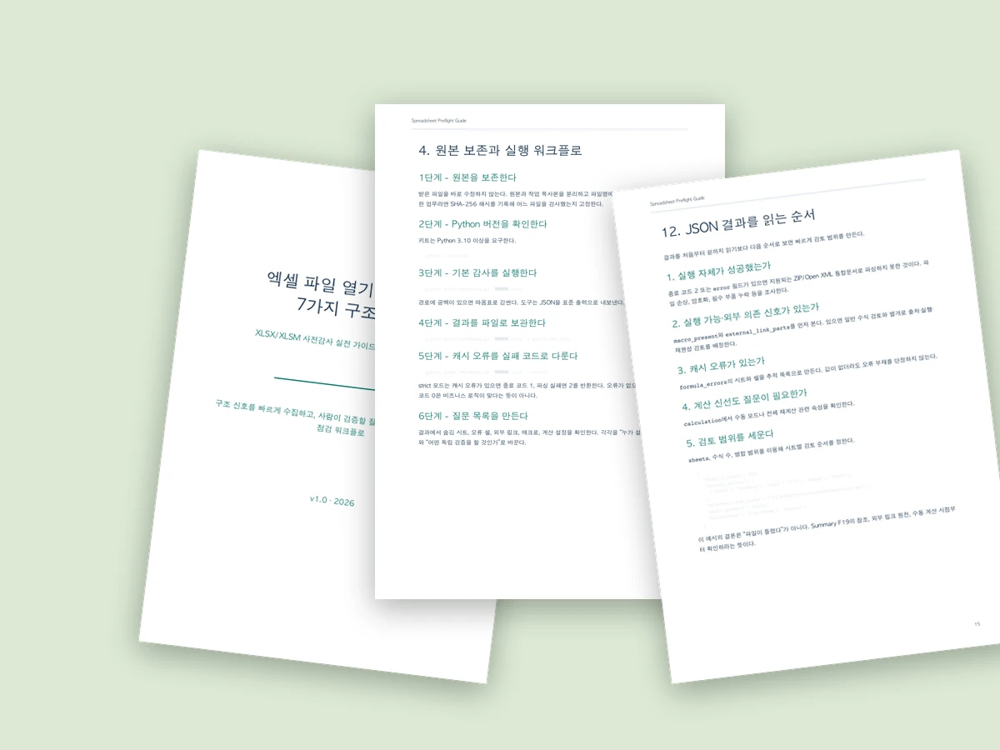

Korean ebook
7가지 구조 점검 가이드
파일 경계, 실행 워크플로, 시트와 수식, 오류 값, 병합 범위, 외부 링크, 매크로, 계산 설정과 결과 해석을 다룹니다.
PDF 23쪽
미리보기
23쪽 한국어 전자책 + 체크리스트 + 읽기 전용 CLI
중요한 XLSX/XLSM을 수정하기 전에 숨김 시트, 수식, 오류 캐시, 외부 링크, 매크로와 계산 설정을 읽기 전용으로 점검합니다.
A Korean spreadsheet preflight guide with a dependency-free audit CLI.

다운로드 구성
전체 상품은 PDF, 한 장 체크리스트, Python CLI, 빠른 시작과 지원 문서를 하나의 ZIP으로 전달합니다. 공개 미리보기는 앞 6쪽이며 유료 ZIP은 공개 저장소에 올리지 않습니다.
Korean ebook
파일 경계, 실행 워크플로, 시트와 수식, 오류 값, 병합 범위, 외부 링크, 매크로, 계산 설정과 결과 해석을 다룹니다.
Read-only CLI
Python 3.10 이상에서 별도 패키지 설치 없이 XLSX/XLSM의 구조 신호를 JSON으로 출력하며 원본 파일을 수정하지 않습니다.
Field checklist
원본 보존부터 결과 파일 보관, 개시 오류 분류와 다음 질문까지 반복 작업에 필요한 순서를 짧게 정리했습니다.
결제 전에 확인
표지, 해결하는 문제, 목차, 사전점검의 경계, 위험 모델, XLSX/XLSM 패키지 설명까지 이메일 입력 없이 읽을 수 있습니다.
공개 문의 3단계
문체, 깊이, 범위가 필요한 내용과 맞는지 확인합니다.
운영체제와 호환성 질문만 남기고 원본 워크북과 비밀은 제외합니다.
지원 결제 경로, ZIP 전달 방식과 지원 범위를 확인한 뒤 진행합니다.
출시가 USD 9
호환성과 전달 방식을 먼저 확인하고, 확인 전에는 결제를 요청하지 않습니다.